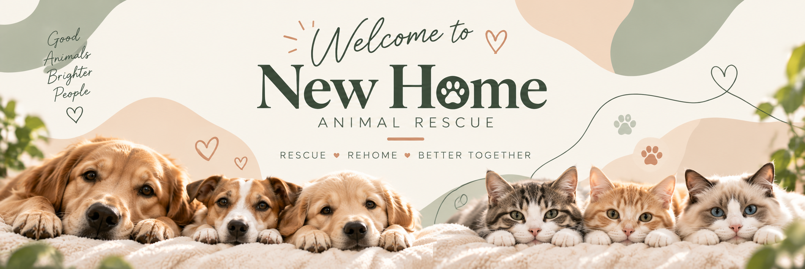

A little love. A forever home.
Welcome to Paw & Home!
Adopting a pet gives an animal a safe, loving home and brings companionship into your life. Discover pets from our shelters and find a friend who fits your family.
How Adoption Works
-
Browse Pets
Select a shelter and meet its available pets.
-
Submit Application
Tell us about your home and experience.
-
Meet & Adopt
After review, meet your new companion and welcome them home.
Why Adopt From Paw & Home?
- Give a rescued animal a second chance.
- Find clear information about each pet's health and personality.
- Connect with shelters that support thoughtful adoption.